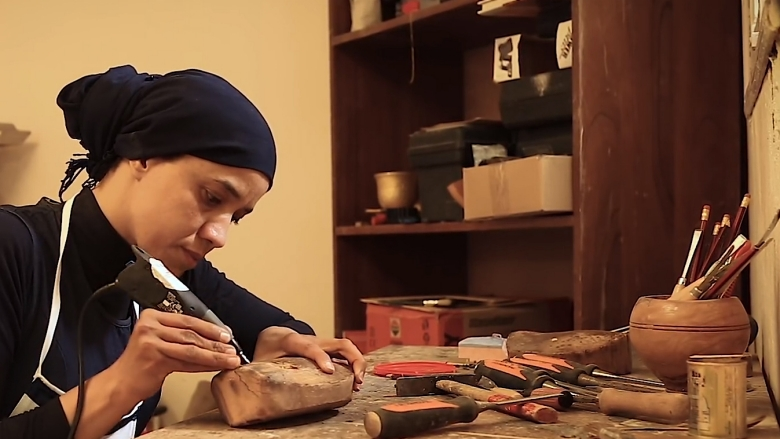
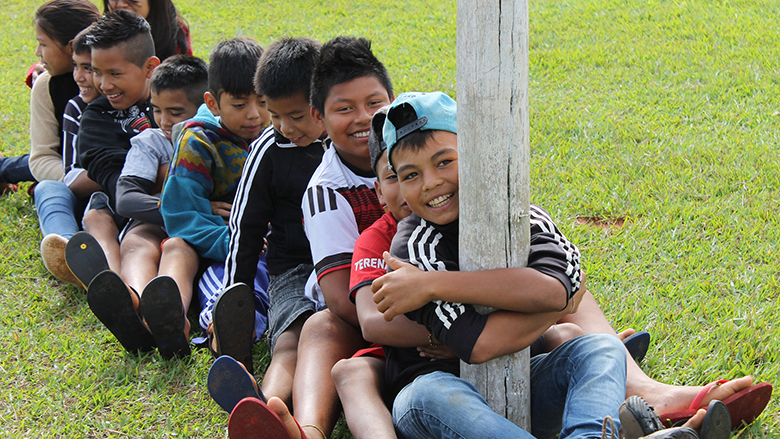
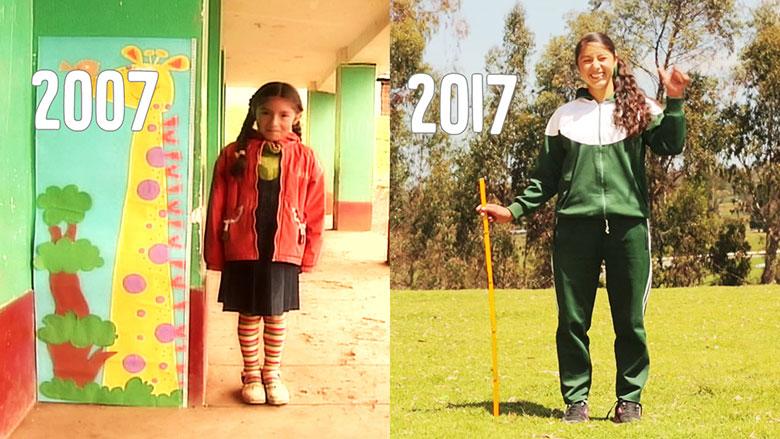
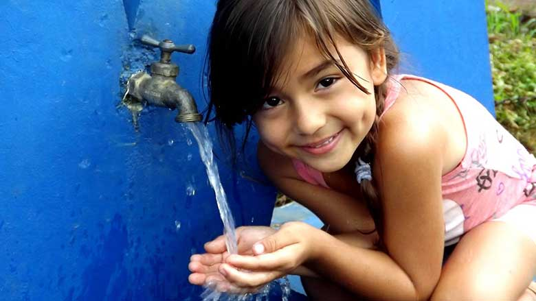

Latin Data

Latin Data

Banco Mundial
Los datos y las investigaciones sirven para establecer prioridades,
intercambiar conocimientos acerca de las medidas que funcionan y medir los avances conseguidos.
Leer más
NOTICIAS

El empleo, núcleo del desarrollo:
Transformar economías y sociedades mediante puestos de trabajo sostenibles
Más

Fin a la violencia en América Latina:
Una mirada a la prevención desde la infancia hasta la edad adulta
Más

Combate a la desnutrición en Perú:
Mejoras en la demanda, oferta y administración de servicios de salud y nutrición en tres regiones.
Más

Mejorar los sistemas de información del agua y el saneamiento:
En lugares rurales de América Latina y el Caribe
Más
Nuestra misión
Brindarte una excelente experiencia al buscar los indicadores solicitados
Empieza la busquedad
Elige el país que desees su información

Somos una plataforma hecha para facilitarte el acceso a la busquedad de datos de indicadores de paises
Latinoamericanos
Selecciona un indicador para conocer información de Perú